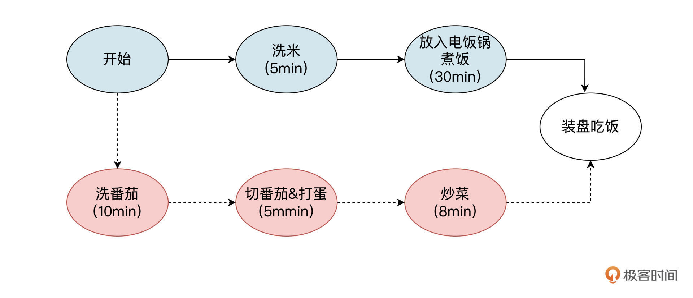
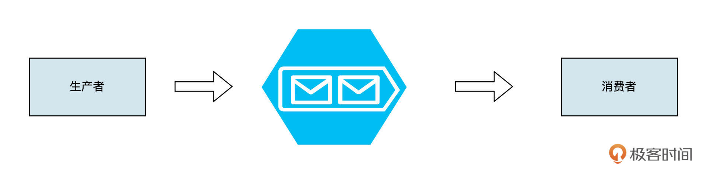
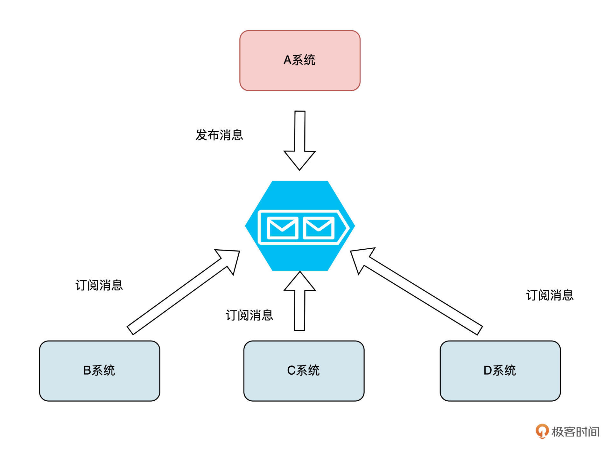
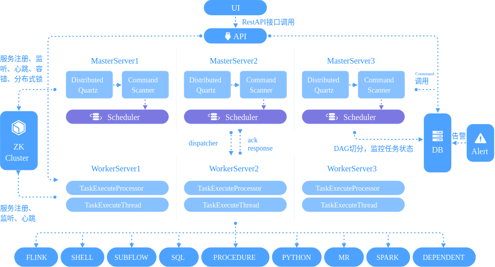
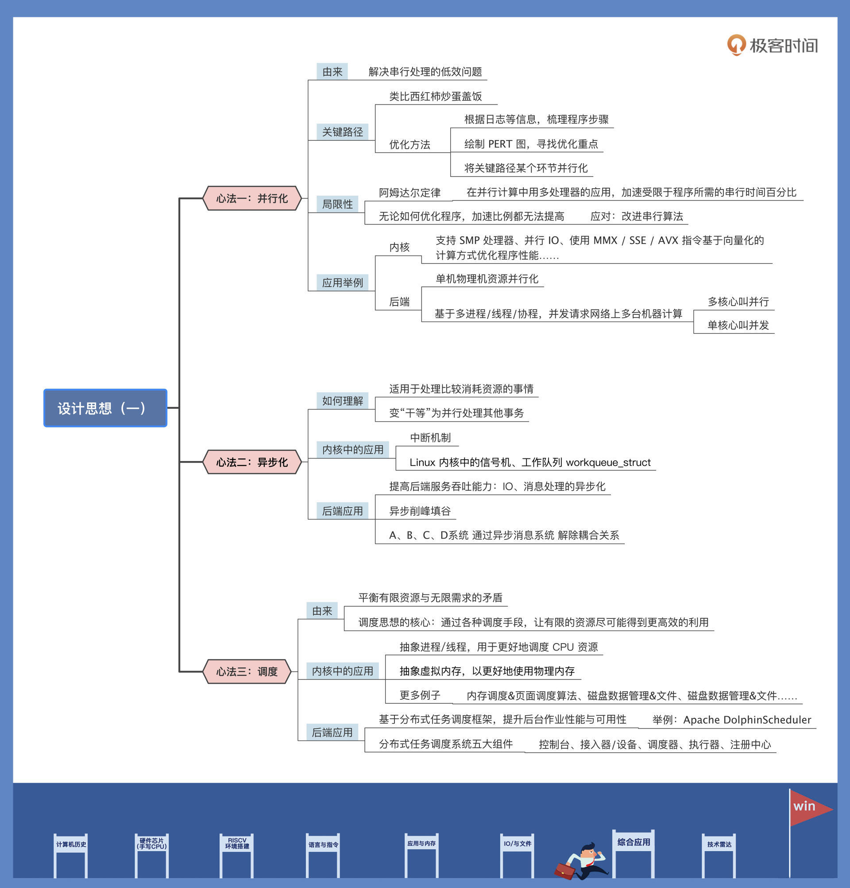

- 00 开篇词 练好基本功，优秀工程师成长第一步.md
- 01 CISC & RISC：从何而来，何至于此.md
- 02 RISC特性与发展：RISC-V凭什么成为“半导体行业的Linux”？.md
- 03 硬件语言筑基（一）：从硬件语言开启手写CPU之旅.md
- 04 硬件语言筑基（二）_ 代码是怎么生成具体电路的？.md
- 05 指令架构：RISC-V在CPU设计上到底有哪些优势？.md
- 06 手写CPU（一）：迷你CPU架构设计与取指令实现.md
- 07 手写CPU（二）：如何实现指令译码模块？.md
- 08 手写CPU（三）：如何实现指令执行模块？.md
- 09 手写CPU（四）：如何实现CPU流水线的访存阶段？.md
- 10 手写CPU（五）：CPU流水线的写回模块如何实现？.md
- 11 手写CPU（六）：如何让我们的CPU跑起来？.md
- 12 QEMU：支持RISC-V的QEMU如何构建？.md
- 13 小试牛刀：跑通RISC-V平台的Hello World程序.md
- 14 走进C语言：高级语言怎样抽象执行逻辑？.md
- 15 C与汇编：揭秘C语言编译器的“搬砖”日常.md
- 16 RISC-V指令精讲（一）：算术指令实现与调试.md
- 17 RISC-V指令精讲（二）：算术指令实现与调试.md
- 18 RISC-V指令精讲（三）：跳转指令实现与调试.md
- 19 RISC-V指令精讲（四）：跳转指令实现与调试.md
- 20 RISC-V指令精讲（五）：原子指令实现与调试.md
- 21 RISC-V指令精讲（六）：加载指令实现与调试.md
- 22 RISC-V指令精讲（七）：访存指令实现与调试.md
- 23 内存地址空间：程序中地址的三种产生方式.md
- 24 虚实结合：虚拟内存和物理内存.md
- 25 堆&栈：堆与栈的区别和应用.md
- 26 延迟分配：提高内存利用率的三种机制.md
- 27 应用内存管理：Linux的应用与内存管理.md
- 28 进程调度：应用为什么能并行执行？.md
- 29 应用间通信（一）：详解Linux进程IPC.md
- 30 应用间通信（二）：详解Linux进程IPC.md
- 31 外设通信：IO Cache与IO调度.md
- 32 IO管理：Linux如何管理多个外设？.md
- 33 lotop与lostat命令：聊聊命令背后的故事与工作原理.md
- 34 文件仓库：初识文件与文件系统.md
- 35 Linux文件系统（一）：Linux如何存放文件？.md
- 36 Linux文件系统（二）：Linux如何存放文件？.md
- 37 浏览器原理（一）：浏览器为什么要用多进程模型？.md
- 38 浏览器原理（二）：浏览器进程通信与网络渲染详解.md
- 39 源码解读：V8 执行 JS 代码的全过程.md
- 40 内功心法（一）：内核和后端通用的设计思想有哪些？.md
- 41 内功心法（二）：内核和后端通用的设计思想有哪些？.md
- 42 性能调优：性能调优工具eBPF和调优方法.md
- 先睹为快：迷你CPU项目效果演示.md
- 加餐01 云计算基础：自己动手搭建一款IAAS虚拟化平台.md
- 加餐02 学习攻略（一）：大数据&云计算，究竟怎么学？.md
- 加餐03 学习攻略（二）：大数据&云计算，究竟怎么学？.md
- 加餐04 谈谈容器云与和CaaS平台.md
- 加餐05 分布式微服务与智能SaaS.md
- 国庆策划01 知识挑战赛：检验一下学习成果吧！.md
- 国庆策划02 来自课代表的学习锦囊.md
- 国庆策划03 揭秘代码优化操作和栈保护机制.md
- 温故知新 思考题参考答案（一）.md
- 用户故事 我是怎样学习Verilog的？.md
- 结束语 心若有所向往，何惧道阻且长.md
40 内功心法（一）：内核和后端通用的设计思想有哪些？
你好，我是LMOS。
前面我们学过了很多基础知识点，但你也许心中还是有点打鼓。要想跳出“边学边忘”的糟糕循环，除了温故知新，加深记忆，更重要的是把“内功心法”迁移到更多场景中。理解了技术的本质之后，在底层和应用层穿梭不是问题，在前端和后端切换也会更加游刃有余。
接下来的两节课，我会带你一起看看内核和后端通用的设计思想都有哪些，它们又是如何用在具体技术里的？这节课我先分享三大通用“心法”，分别是并行化、异步和调度。
内功心法之并行化
我们专栏最前面讲过图灵机，刚开始接触到它的时候，是不是感觉图灵机的串行纸带模型对计算机做了非常好的抽象呢？然而，现实世界里我们如果只使用串行模型来解决问题，恐怕就比较低效了。
那么如何才能解决串行处理的低效问题呢？这就不得不说到并行化了。
关键路径和阿姆达尔定律
我先描述一个现象，你看看是不是很熟悉：一段程序放在面前，你需要对它进行性能优化，但你辛辛苦苦调了许久，优化效果却并不明显。
之所以会遇到这样的问题，核心原因是我们没有梳理清楚这段程序的关键路径，并对关键路径做有效优化。那么如何使用关键路径这种工具呢？我给你讲个番茄炒蛋盖饭的故事。
你没走错片场，咱们梳理一下做一道番茄炒蛋盖饭，都需要做什么。我们先在脑中把整个过程拆解成下图中的具体步骤。然后，在每一个步骤上标出这个步骤的耗时。你可以参考后面这张流程图看一下。

对照示意图，我们就会发现，吃上盖浇饭的最短时间其实是实线部分的35分钟，这条最短路径就是做成这件事情的关键路径。
当我们想要优化做这道菜的时间的时候，我们可以先考虑优化黑线中的关键路径，比如我们可以考虑买10个电饭锅（并行化），让每个电饭锅煮少一点，这样可以熟得更快一些，把煮饭时间也缩短到5分钟。这样整体时间就会得到优化。这个例子可能和实际做饭的情况不大一样，不过这里我们主要是为了说明并行化这件事，也期待你找到一个更贴切的事情做类比。
其实我们做程序优化的时候也是如此，很多时候明明优化了却不太见效，本质上是因为没有找对程序运行中的关键路径。
那怎么解决这种问题呢？我们可以根据日志等信息，把整个程序的运行步骤梳理清楚，绘制出上面这样的PERT图之后，优化的重点就一目了然了。也许这时候你会发现，之前自己根本就没有优化对地方。
有了前面把关键路径上的某个环节并行化的例子，你可能会好奇，是不是并行化无所不能，以后就靠并行化来优化系统就行了呢？
其实不然，并行化也有自己的局限性，这里就要提到阿姆达尔定律了。阿姆达尔定律是计算机工程中的一条经验法则，它的定义是：在并行计算中用多处理器的应用，加速受限于程序所需的串行时间百分比。
只说定义不好理解，举个例子，如果你有一段程序，其中有一半是串行的，另一半是并行的，那么这段程序的最大加速比例就是2。
这就意味着不管你如何优化程序，无论是让它运行在多核，或者分布到不同的机器上，这个加速比例都没有办法提高。这种情况下，我们可以优先考虑改进串行的算法，可能会带来更好的提升。
后端场景中的并行化思想
内核中，并行化思想有很多应用。比如说，支持SMP处理器、并行IO、使用MMX/SSE/AVX指令基于向量化的计算方式优化程序性能之类的操作，本质上都是在用并行化的思路来提升性能。
而在后端场景下，并行化思想其实又进一步做了扩展。后端的并行化并不仅仅局限于单机上的物理机资源的并行化，我们还可以基于多进程/线程/协程等抽象的概念，并发请求网络上的不同机器进行计算，从而实现更高的效率。
当然需要注意的是发起多（进程/线程/协程）调用的客户端节点，有可能是单核的，也可能是多核心的。如果是多核心情况下的调用，我们称之为并行；而单核心时我们会叫做并发。
虽然概念和实现略有不同，但并行化的核心思想本质是相通的。举个例子吧，比如当我们使用下边这段程序，开启多个协程来同时发起http请求的时候，本质就是在借助并行化的思想来提升效率：
func main() {
i := 0
// 使用WaitGroup原语，等一组goroutine全部完成之后再继续
wg := &sync.WaitGroup{}
for i < 10 {
// 增加计数器
wg.Add(1)
url := "https://time.geekbang.org"
go func(url string) {
resp, _ := http.Get(url)
defer resp.Body.Close()
data, _ := ioutil.ReadAll(resp.Body)
// 释放计数器
wg.Done()
}(url)
i++
}
// 阻塞住，等待所有协程执行完毕时再释放
wg.Wait()
fmt.Println("end")
}
不难发现，虽然发起了10次请求，但其实多个Goroutine是并发发起请求的，所以最终响应时间只取决于最慢的那一次请求。我们可以发现整体耗时，要比串行发起10次请求短多了。
内功心法之异步化
学习了并行化这个思想之后，我再来说说其他更有趣的优化思路——异步化思想，这也是我们经常用来解决问题的一个神器。
当一个事情处理起来比较消耗资源，我们就会考虑把这个事情异步化。比如我们去某个网红饭店点菜，如果是同步处理的话，我们需要每隔一分钟就把服务员叫过来，问一次菜好了没有。这样做，会同时占用你和服务员的资源，估计问不了几次你就崩溃了。
这时候聪明的服务员就想到了一个办法，当你点单之后就给你发一个“号码牌”。等菜做好了之后，服务员再按照号码牌把菜送上来。这样，在等待的过程中你还可以干点别的事情，服务员也不会被一桌客人给“锁定住”，无法服务别的顾客。由此效率就得到了提升，这样的操作就是异步化处理。
我们在之前虚拟内存的时候（可以回顾[第二十四节课]），其实就已经接触过异步化了。当我们的程序配置好中断之后，就可以运行别的逻辑去了。这样当中断发生的时候，内核才会调用对应的中断处理函数，这其实就是一种异步化的思路。
内核里异步化思想随处可见，不光中断机制，Linux内核中的信号机制、工作队列workqueue_struct其实也都大量使用了异步化思想。
异步化思想在后端中架构中也有很多应用，比如为了提高后端服务的吞吐能力，我们可以使用AIO、epoll做IO、消息处理的异步化。当我们有较多写入请求，为了避免击穿下游系统，我们也可以用下图中的队列思路，来进行异步的削峰填谷。

再比如一个A系统原本通过直接调用，耦合了下游B、C、D子系统，需要等下游处理完毕，才能返回的时候，我们也可以基于队列进行异步处理，从而降低耦合、提升响应时间。你可以对照后面的流程图，理解一下这段话：

掌握了异步化思想之后，你就可以基于相同的思路，举一反三来设计出分布式事务、分布式计算框架之类等更多有用的中间件啦！
内功心法之调度
现实世界里，我们手里的资源往往是有限的，但需求却往往趋近于无限。怎么平衡这种矛盾呢？没错，为了更好地利用资源，就出现了调度这个概念。调度思想的核心就是通过各种调度手段，让有限的资源尽可能得到更高效的利用。
操作系统内核中，调度无处不在。比如为了更好地抽象CPU资源，OS内核抽象出了进程/线程，面对CPU资源有限、有CPU资源需求的进程/线程可能有无限多的情况，OS内核设计出了各种调度算法。
就拿CFS调度器来说，它在调度上非常“公平”，它记录了每个进程的执行时间，哪个进程运行时间最少，就让那个进程运行。更多细节，我在第一季《操作系统实战45讲》[第二十七课]详细分享过，感兴趣的话你可以去看看。
再比如为了更好地使用物理内存，OS内核抽象出了虚拟内存，那如何调度这些内存呢？内核又设计出了页面调度算法。还有就是为了管理磁盘中的数据，OS抽象出了文件概念。这还没完，如何提读写升效率呢？OS又设计出了各种磁盘调度算法。
调度思想在后端架构中其实也很常见。以Golang、Java编程语言为例，在语言内的运行时库中也会包含对进程/线程/协程、内存的调度管理策略。
在业务层面，我们很多时候也会开发很多后台作业，为了提升这些作业的性能和作业的可用性，我们也会基于分布式任务调度框架，进行后台作业的分布式调度。我给你举个具体点的例子，带你看看Apache DolphinScheduler的架构图：

当然，为了满足分布式、大数据领域的各种业务场景，Apache DolphinScheduler设计的其实比较复杂，但是到回归架构设计上，我们发现，大多数分布式任务调度系统都会包含这以下五个部分：
- 控制台：用于展示调度任务的配置、依赖关系、任务状态等信息；-
- 接入：将控制台的作业转化、下发给调度器模块，并且向注册中心注册任务；-
- 调度器：接收接入下发的调度任务，进行任务拆分下发，在注册中心找执行器，然后把任务下发到执行器执行，同时也注册到注册中心；-
- 执行器：接收调度任务，并且上报状态给注册中心；-
- 注册中心：主要用于节点、任务状态的协调与同步。
虽然这五个部分看起来有点复杂，但是我们回归到设计一个调度系统问题的本质上来思考。调度系统解决的关键问题，其实是将一些“资源”分配给一些“活”，并且保证“活”能按照一定的顺序、在一定资源开销的前提下处理完。顺着这条主线理解起来，就会清晰很多了。
总结
今天我带你了解了三种内核和后端通用的设计思想。我也举了不少例子，方便你了解这些思想，如何用在后端应用层和内核软件里。
其实，今天的课程内容属于偏抽象的架构思想，目的是帮你拓宽思路，把学过的知识融会贯通。因此建议你学习完了之后，再结合你自己的兴趣自行拓展延伸。如果你领会到了这思想的本质，不妨试试应用在技术实践上，相信会让你的开发工作更得心应手。
另外，我还挑选了三个代表性的项目，它们很好地应用了今天所讲的设计思想，你可以课后了解一下：
- 并行化可以参考Hadoop项目：https://hadoop.apache.org/
- 异步化可以参考Pulsar项目：https://pulsar.apache.org/
- 调度可以参考前文中提到的DolphinScheduler项目：https://dolphinscheduler.apache.org/
最后我给你梳理了一张导图，供你做个参考：

思考题
今天，我们学习了在计算机系统中常用的并行化、异步化和调度这三种通用的设计思想，那么请你思考一下，自己工作、生活中还有哪些场景用到了这些思想呢？
期待看到你的分享，我在留言区等你。如果觉得这节课还不错，别忘了转发给更多朋友，跟他一起交流学习。
© 2019 - 2023 Liangliang Lee. Powered by Vert.x and hexo-theme-book.